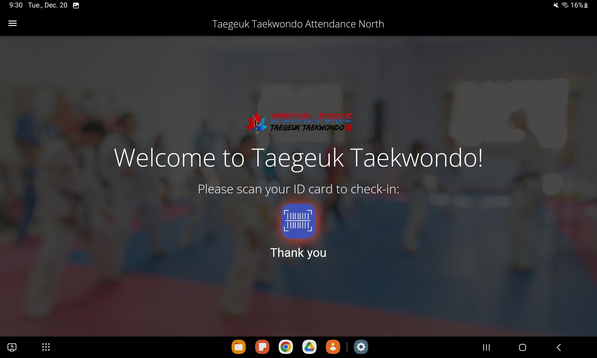

Intro

Hello, my name is David Vasquez. I have an IT background in network
and server administration and have recently been doing app
development and cloud administration. I am a problem solver and
enjoy learning new skills. I love coding because it brings
creativeness and problem solving together and I find it enjoyable.
Trying out new things in tech is one of my favorite things to do. I
hope you like what you see. By the way, check out my
work.
Works
Student Attendance App
Flutter | Firestore
An attendance app that uses the device's camera as a barcode
scanner. The app scans the barcode, then sends the data to a
Firestore database and also captures the timestamp of the scan to
track attendance. The names were previously written down by hand.
This app prevents human error and also disagreements between
customers and staff when trying to confirm correct attendance times.
This tracks that students attended as well as the timestamp of when
they attended. Check out the code
here.

Barcode QR Code Generator
ReactJS | BootStrap
This app allows you to generate a barcode or a QR code using the
data that you enter in the text box that is downloadable. After
entering the data in the textbox, a barcode and a QR code will be
generated in real-time as you type data in the box. Once your code
is generated, you can download a PNG file to your phone or a local
directory on your computer. This app was built with React, Vite and
Bootstrap. You can try out this app by clicking
here.

Recipe Finder
Dart | Flutter | Spoonacular API
This is a mobile app that I had a lot of fun working on. It is a
recipe finder app that takes the ingredients that a user enters in,
and shows what they can make with the ingredients they enter. The
user enters what they have in the ingredients box, taps "Get Recipe"
and then are taken to a page where it shows a list of dishes they
can make. The user can then make their selection and a dialog box
appears with the recipe information such as cooking time,
ingredients needed and the cooking instructions. All this data is
pulled from the Spoonacular API that has the database of recipes.
It's definitely been handy for me in a couple situations and helped
me find some recipes in a pinch! Check out the web version of this app
here.

Happy YEG
React JS | Tailwind CSS | Firebase
A handy little guide to helping people find the best Happy Hour
specials in the city of Edmonton. This site was built with React and
Tailwind CSS which was a lot of fun. The data was manually entered
in a JSON file and the page reacts to the user's selection. If you
click on North, West, etc, it will only show restaurants in the
respective button that the user clicks on. Tailwind CSS really made
it easy to make the site responsive so it looks great on desktop and
mobile. There's a contact link in the menu where you can send me a
message, and you're more than welcome to put in some suggestions!
Feel free to try it out
here!
Locally Hosted AI Chatbot
Ubuntu | Ollama | Docker
This was a very fun project to work on. This was a sub-section of
home server project. My goal was to take an old computer and turn it
into a home Ubuntu server, and see how far I can go with it without
having to do any upgrades or change parts. One of the functions of
this server was to host my own AI chatbot. Ollama was installed
which was used to pull Llama3. Then, a web interface called Open Web
UI was setup inside a Docker container, had it point to Ollama on
the home server and lists the LLMs that were pulled. In this case,
Llama3. The end result is a "ChatGPT" feel but with many features
such as pulling different models, creating users and restrictions if
necessary, and customizing AI models. I'm in the process of writing
the docunentation which will be shared shortly on my Medium page.
.
About

Here is how it all started. At the age of 10 I built my first
computer and what seemed like a daunting task at the time, turned
into something that I found enjoyment in. I had fun learning about
the computer, which evolved into working with networks of computers
and servers as I got older (maybe not as fun some days 😊),
and I never wanted to stop learning. I learned things such as Linux
and Cisco IOS and I still wanted to keep going. I was asked to make
websites for friends which I didn't know how to do at the time, but
I wanted to challenge myself and learn anyways. Started off with
basic HTML, CSS, then React and would go on to build mobile apps for
friends as well which was lots of fun! (yes, even the bugs). After
all that I never want to stop learning and always want to continue
learning new things, experimenting with my home lab, seeing what I
can accomplish and pushing myself beyond any boundaries and my
comfort zone. When things break, I see it as a learning opportunity
which is a mindset that I have always lived by and has helped me
propel my career forward.
Contact
Below is contact information. Feel free to reach me through any of
these channels including my social media which are linked below as
well. I'd love to chat and I look forward to working together.
Reach me by:
Email: david@dvasquez.net